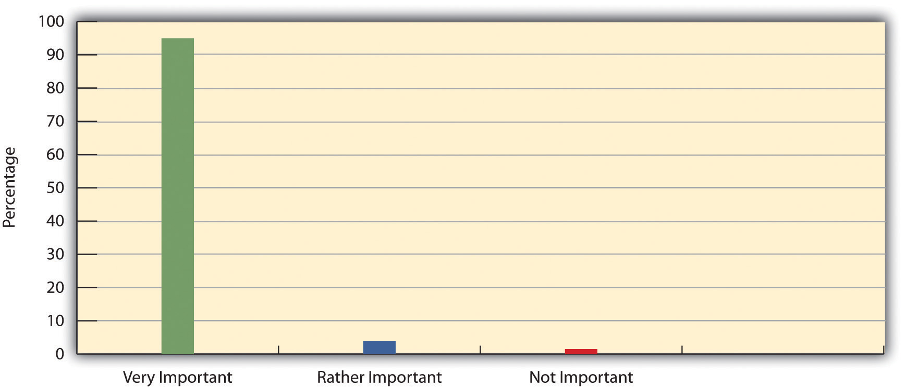
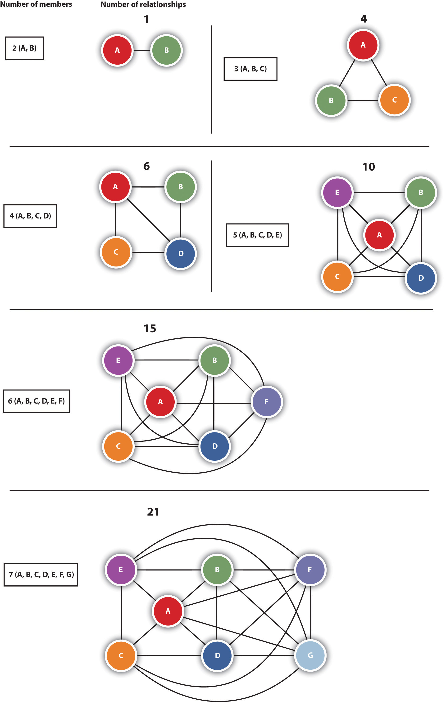
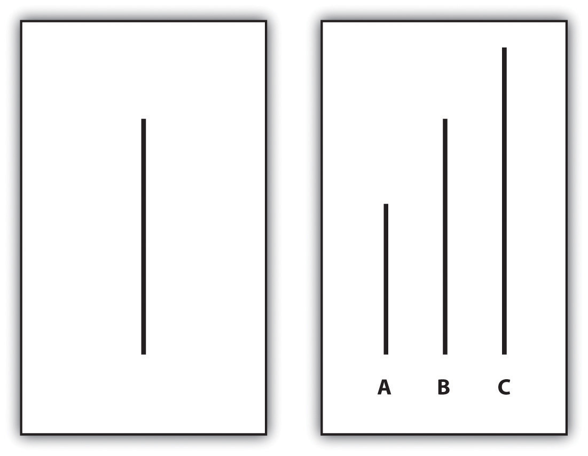

“Arrests Made in Vandalism Spree,” the headline said. In March 2010, three high school students, two juveniles and one 18-year-old, allegedly spray-painted obscenities on cars, homes, and an elementary school in Muncie, Indiana. A police captain said, “I think they just started out to do a friend’s house. The thing kind of carried away after that and went nuts through the rest of the neighborhood.” The estimated damage was in the thousands of dollars and was so extensive that the 18-year-old suspect was charged with a felony. The police captain said the boys felt sorry for their vandalism. “They probably wish they could take it back, but it happened and it’s a lot of damage.” (Werner, 2010)Werner, N. (2010, April 2). Arrests made in vandalism spree. The Star Press. Retrieved from http://pqasb.pqarchiver.com/thestarpress/access/2000011861.html?FMT=ABS&date=Apr+02%2C+2010
This news story depicts an unusual group activity, spray-painting. It is likely that none of these teens would have done the spray-painting by himself. If so, this news story reminds us of the importance of the many groups to which people typically belong. To recall Chapter 5 "Social Structure and Social Interaction", the English poet John Donne (1573–1631) once wrote, “No man is an island, entire of itself; Every man is a piece of the continent, a part of the main” (Donne, 1839, pp. 574–575).Donne, J. (1839). Meditation XVII. In H. Alford (Ed.), The works of John Donne (Vol. III, pp. 574–575). London, England: John W. Parker. Obviously meant to apply to both sexes, Donne’s passage reminds us that we are all members of society. At the more micro level, we are all members of social groups and categories. As we have seen in previous chapters, sociologists look at us more as members of groups and less as individuals, and they try to explain our attitudes and behavior in terms of the many groups and social backgrounds from which we come. For these reasons, sociology is often considered the study of group life, group behavior, and group processes. This chapter discusses the importance of many types of groups for understanding our behavior and attitudes and for understanding society itself. We will see that groups are necessary for many of our needs and for society’s functioning but at the same time can often lead to several negative consequences, as the story of vandalism in Muncie illustrates.
A social groupTwo or more people who regularly interact on the basis of mutual expectations and share a common identity. consists of two or more people who regularly interact on the basis of mutual expectations and who share a common identity. It is easy to see from this definition that we all belong to many types of social groups: our families, our different friendship groups, the sociology class and other courses we attend, our workplaces, the clubs and organizations to which we belong, and so forth. Except in rare cases, it is difficult to imagine any of us living totally alone. Even people who live by themselves still interact with family members, coworkers, and friends and to this extent still have several group memberships.
It is important here to distinguish social groups from two related concepts: social categories and social aggregates. A social categoryA collection of individuals who have at least one attribute in common but otherwise don’t necessarily interact. is a collection of individuals who have at least one attribute in common but otherwise do not necessarily interact. Women is an example of a social category. All women have at least one thing in common, their biological sex, even though they do not interact. Asian Americans is another example of a social category, as all Asian Americans have two things in common, their ethnic background and their residence in the United States, even if they do not interact or share any other similarities. As these examples suggest, gender, race, and ethnicity are the basis for several social categories. Other common social categories are based on our religious preference, geographical residence, and social class.
Falling between a social category and a social group is the social aggregateA collection of people who are in the same place at the same time but who otherwise don’t necessarily interact, except in the most superficial of ways, or have anything else in common., which is a collection of people who are in the same place at the same time but who otherwise do not necessarily interact, except in the most superficial of ways, or have anything else in common. The crowd at a sporting event and the audience at a movie or play are common examples of social aggregates. These collections of people are not a social category, because the people are together physically, and they are also not a group, because they do not really interact and do not have a common identity unrelated to being in the crowd or audience at that moment.
With these distinctions laid out, let’s return to our study of groups by looking at the different types of groups sociologists have delineated.
A common distinction is made between primary groups and secondary groups. A primary groupA group that is usually small, that is characterized by extensive interaction and strong emotional ties, and that lasts over time. is usually small, is characterized by extensive interaction and strong emotional ties, and endures over time. Members of such groups care a lot about each other and identify strongly with the group. Indeed, their membership in a primary group gives them much of their social identity. Charles Horton Cooley, whose looking-glass-self concept was discussed in Chapter 5 "Social Structure and Social Interaction", called these groups primary, because they are the first groups we belong to and because they are so important for social life. The family is the primary group that comes most readily to mind, but small peer friendship groups, whether they are your high school friends, an urban street gang, or middle-aged adults who get together regularly, are also primary groups.
Although a primary group is usually small, somewhat larger groups can also act much like primary groups. Here athletic teams, fraternities, and sororities come to mind. Although these groups are larger than the typical family or small circle of friends, the emotional bonds their members form are often quite intense. In some workplaces, coworkers can get to know each other very well and become a friendship group in which the members discuss personal concerns and interact outside the workplace. To the extent this happens, small groups of coworkers can become primary groups (Elsesser & Peplau, 2006; Marks, 1994).Elsesser, K., & Peplau L. A. (2006). The glass partition: Obstacles to cross-sex friendships at work. Human Relations, 59, 1077–1100; Marks, S. R. (1994). Intimacy in the public realm: The case of co-workers. Social Forces, 72, 843–858.
Our primary groups play significant roles in so much that we do. Survey evidence bears this out for the family. Figure 6.1 "Percentage of Americans Who Say Their Family Is Very Important, Quite Important, Not Too Important, or Not at All Important in Their Lives" shows that an overwhelming majority of Americans say their family is “very important” in their lives. Would you say the same for your family?
Figure 6.1 Percentage of Americans Who Say Their Family Is Very Important, Quite Important, Not Too Important, or Not at All Important in Their Lives
Source: Data from World Values Survey, 2002.
Ideally, our primary groups give us emotional warmth and comfort in good times and bad and provide us an identity and a strong sense of loyalty and belonging. Our primary group memberships are thus important for such things as our happiness and mental health. Much research, for example, shows rates of suicide and emotional problems are lower among people involved with social support networks such as their families and friends than among people who are pretty much alone (Maimon & Kuhl, 2008).Maimon, D., & Kuhl, D. C. (2008). Social control and youth suicidality: Situating Durkheim’s ideas in a multilevel framework. American Sociological Review, 73, 921–943. However, our primary group relationships may also not be ideal, and, if they are negative ones, they may cause us much mental and emotional distress. In this regard, the family as a primary group is the setting for much physical and sexual violence committed against women and children (Gosselin, 2010)Gosselin, D. K. (2010). Heavy hands: An introduction to the crimes of family violence (4th ed.). Upper Saddle River, NJ: Prentice Hall. (see Chapter 11 "Gender and Gender Inequality").
Although primary groups are the most important ones in our lives, we belong to many more secondary groupsA group that is larger and more impersonal than a primary group and that exists to achieve a specific purpose., which are groups that are larger and more impersonal and exist, often for a relatively short time, to achieve a specific purpose. Secondary group members feel less emotionally attached to each other than do primary group members and do not identify as much with their group nor feel as loyal to it. This does not mean secondary groups are unimportant, as society could not exist without them, but they still do not provide the potential emotional benefits for their members that primary groups ideally do. The sociology class for which you are reading this book is an example of a secondary group, as are the clubs and organizations on your campus to which you might belong. Other secondary groups include religious, business, governmental, and civic organizations. In some of these groups, members get to know each other better than in other secondary groups, but their emotional ties and intensity of interaction generally remain much weaker than in primary groups.
Primary and secondary groups can act both as our reference groupsA group that sets a standard for guiding our own behavior and attitudes. or as groups that set a standard for guiding our own behavior and attitudes. The family we belong to obviously affects our actions and views, as, for example, there were probably times during your adolescence when you decided not to do certain things with your friends to avoid disappointing or upsetting your parents. On the other hand, your friends regularly acted during your adolescence as a reference group, and you probably dressed the way they did or did things with them, even against your parents’ wishes, precisely because they were your reference group. Some of our reference groups are groups to which we do not belong but to which we nonetheless want to belong. A small child, for example, may dream of becoming an astronaut and dress like one and play like one. Some high school students may not belong to the “cool” clique in school but may still dress like the members of this clique, either in hopes of being accepted as a member or simply because they admire the dress and style of its members.
Samuel Stouffer and colleagues (Stouffer, Suchman, DeVinney, Star, & Williams, 1949)Stouffer, S. A., Suchman, E. A., DeVinney, L. C., Star, S. A., & Williams, R. M., Jr. (1949). The American soldier: Adjustment during army life (Studies in Social Psychology in World War II, Vol. 1). Princeton, NJ: Princeton University Press. demonstrated the importance of reference groups in a well-known study of American soldiers during World War II. This study sought to determine why some soldiers were more likely than others to have low morale. Surprisingly, Stouffer found that the actual, “objective” nature of their living conditions affected their morale less than whether they felt other soldiers were better or worse off than they were. Even if their own living conditions were fairly good, they were likely to have low morale if they thought other soldiers were doing better. Another factor affecting their morale was whether they thought they had a good chance of being promoted. Soldiers in units with high promotion rates were, paradoxically, more pessimistic about their own chances of promotion than soldiers in units with low promotion rates. Evidently the former soldiers were dismayed by seeing so many other men in their unit getting promoted and felt worse off as a result. In each case, Stouffer concluded, the soldiers’ views were shaped by their perceptions of what was happening in their reference group of other soldiers. They felt deprived relative to the experiences of the members of their reference group and adjusted their views accordingly. The concept of relative deprivation captures this process.
Members of primary and some secondary groups feel loyal to those groups and take pride in belonging to them. We call such groups in-groupsA group to which members feel particularly loyal and take great pride in belonging.. Fraternities, sororities, sports teams, and juvenile gangs are examples of in-groups. Members of an in-group often end up competing with members of another group for various kinds of rewards. This other group is called an out-groupA group with which an in-group feels it is competing for various kinds of rewards and compared to which the in-group feels superior.. The competition between in-groups and out-groups is often friendly, as among members of intramural teams during the academic year when they vie in athletic events. Sometimes, however, in-group members look down their noses at out-group members and even act very hostilely toward them. Rival fraternity members at several campuses have been known to get into fights and trash each other’s houses. More seriously, street gangs attack each other, and hate groups such as skinheads and the Ku Klux Klan have committed violence against people of color, Jews, and other individuals they consider members of out-groups. As these examples make clear, in-group membership can promote very negative attitudes toward the out-groups with which the in-groups feel they are competing. These attitudes are especially likely to develop in times of rising unemployment and other types of economic distress, as in-group members are apt to blame out-group members for their economic problems (Olzak, 1992).Olzak, S. (1992). The dynamics of ethnic competition and conflict. Stanford, CA: Stanford University Press.
These days in the job world we often hear of “networking,” or taking advantage of your connections with people who have connections to other people who can help you land a job. You do not necessarily know these “other people” who ultimately can help you, but you do know the people who know them. Your ties to the other people are weak or nonexistent, but your involvement in this network may nonetheless help you find a job.
Modern life is increasingly characterized by such social networksThe totality of relationships that link us to other people and groups and through them to still other people and groups., or the totality of relationships that link us to other people and groups and through them to still other people and groups. Some of these relationships involve strong bonds, while other relationships involve weak bonds (Granovetter, 1983).Granovetter, M. (1983). The strength of weak ties: A network theory revisited. Sociological Theory, 1, 201–233. Facebook and other Web sites have made possible networks of a size unimaginable just a decade ago. Social networks are important for many things, including getting advice, borrowing small amounts of money, and finding a job. When you need advice or want to borrow $5 or $10, to whom do you turn? The answer is undoubtedly certain members of your social networks—your friends, family, and so forth.
The indirect links you have to people through your social networks can help you find a job or even receive better medical care. For example, if you come down with a serious condition such as cancer, you would probably first talk with your primary care physician, who would refer you to one or more specialists whom you do not know and who have no connections to you through other people you know. That is, they are not part of your social network. Because the specialists do not know you and do not know anyone else who knows you, they are likely to treat you very professionally, which means, for better or worse, impersonally.
Now suppose you have some nearby friends or relatives who are physicians. Because of their connections with other nearby physicians, they can recommend certain specialists to you and perhaps even get you an earlier appointment than your primary physician could. Because these specialists realize you know physicians they know, they may treat you more personally than otherwise. In the long run, you may well get better medical care from your network through the physicians you know. People lucky enough to have such connections may thus be better off medically than people who do not.
But let’s look at this last sentence. What kinds of people have such connections? What kinds of people have friends or relatives who are physicians? All other things being equal, if you had two people standing before you, one employed as a vice president in a large corporation and the other working part time at a fast-food restaurant, which person do you think would be more likely to know a physician or two personally? Your answer is probably the corporate vice president. The point is that factors such as our social class and occupational status, our race and ethnicity, and our gender affect how likely we are to have social networks that can help us get jobs, good medical care, and other advantages. As just one example, a study of three working-class neighborhoods in New York City—one white, one African American, and one Latino—found that white youths were more involved through their parents and peers in job-referral networks than youths in the other two neighborhoods and thus were better able to find jobs, even if they had been arrested for delinquency (Sullivan, 1989).Sullivan, M. (1989). Getting paid: Youth crime and work in the inner city. Ithaca, NY: Cornell University Press. This study suggests that even if we look at people of different races and ethnicities in roughly the same social class, whites have an advantage over people of color in the employment world.
Gender also matters in the employment world. In many businesses, there still exists an “old boys’ network,” in which male executives with job openings hear about male applicants from male colleagues and friends. Male employees already on the job tend to spend more social time with their male bosses than do their female counterparts. These related processes make it more difficult for females than for males to be hired and promoted (Barreto, Ryan, & Schmitt, 2009).Barreto, M., Ryan, M. K., & Schmitt, M. T. (Eds.). (2009). The glass ceiling in the 21st century: Understanding barriers to gender equality. Washington, DC: American Psychological Association. To counter these effects and to help support each other, some women form networks where they meet, talk about mutual problems, and discuss ways of dealing with these problems. An example of such a network is The Links, Inc., a community service group of 12,000 professional African American women whose name underscores the importance of networking (http://www.linksinc.org/index.shtml). Its members participate in 270 chapters in 42 states; Washington, DC; and the Bahamas. Every two years, more than 2,000 Links members convene for a national assembly at which they network, discuss the problems they face as professional women of color, and consider fund-raising strategies for the causes they support.
Social scientists have studied how people behave in groups and how groups affect people’s behavior, attitudes, and perceptions (Gastil, 2009).Gastil, J. (2009). The group in society. Thousand Oaks, CA: Sage. Their research underscores the importance of groups for social life, but it also points to the dangerous influence groups can sometimes have on their members.
The distinction made earlier between small primary groups and larger secondary groups reflects the importance of group size for the functioning of a group, the nature of its members’ attachments, and the group’s stability. If you have ever taken a very small class, say fewer than 15 students, you probably noticed that the class atmosphere differed markedly from that of a large lecture class you may have been in. In the small class, you were able to know the professor better, and the students in the room were able to know each other better. Attendance in the small class was probably more regular than in the large lecture class.
Over the years, sociologists and other scholars have studied the effects of group size on group dynamics. One of the first to do so was German sociologist Georg Simmel (1858–1918), who discussed the effects of groups of different sizes. The smallest group, of course, is the two-person group, or dyadA two-person group., such as a married couple or two people engaged to be married or at least dating steadily. In this smallest of groups, Simmel noted, relationships can be very intense emotionally (as you might know from personal experience) but also very unstable and short lived: if one person ends the relationship, the dyad ends as well.
A triadA three-person group., or three-person group, involves relationships that are still fairly intense, but it is also more stable than a dyad. A major reason for this, said Simmel, is that if two people in a triad have a dispute, the third member can help them reach some compromise that will satisfy all the triad members. The downside of a triad is that two of its members may become very close and increasingly disregard the third member, reflecting the old saying that “three’s a crowd.” As one example, some overcrowded college dorms are forced to house students in triples, or three to a room. In such a situation, suppose that two of the roommates are night owls and like to stay up very late, while the third wants lights out by 11:00 p.m. If majority rules, as well it might, the third roommate will feel very dissatisfied and may decide to try to find other roommates.
As groups become larger, the intensity of their interaction and bonding decreases, but their stability increases. The major reason for this is the sheer number of relationships that can exist in a larger group. For example, in a dyad only one relationship exists, that between the two members of the dyad. In a triad (say composed of members A, B, and C), three relationships exist: A-B, A-C, and B-C. In a four-person group, the number of relationships rises to six: A-B, A-C, A-D, B-C, B-D, and C-D. In a five-person group, 10 relationships exist, and in a seven-person group, 21 exist (see Figure 6.2 "Number of Two-Person Relationships in Groups of Different Sizes"). As the number of possible relationships rises, the amount of time a group member can spend with any other group member must decline, and with this decline comes less intense interaction and weaker emotional bonds. But as group size increases, the group also becomes more stable because it is large enough to survive any one member’s departure from the group. When you graduate from your college or university, any clubs, organizations, or sports teams to which you belong will continue despite your exit, no matter how important you were to the group, as the remaining members of the group and new recruits will carry on in your absence.
Figure 6.2 Number of Two-Person Relationships in Groups of Different Sizes
Most groups have leaders. In the family, of course, the parents are the leaders, as much as their children sometimes might not like that. Even some close friendship groups have a leader or two who emerge over time. Virtually all secondary groups have leaders. These groups often have a charter, operations manual, or similar document that stipulates how leaders are appointed or elected and what their duties are.
Sociologists commonly distinguish two types of leaders, instrumental and expressive. An instrumental leaderA leader whose main focus is to achieve group goals and accomplish group tasks. is a leader whose main focus is to achieve group goals and accomplish group tasks. Often instrumental leaders try to carry out their role even if they alienate other members of the group. The second type is the expressive leaderA leader whose main focus is to maintain and improve the quality of relationships among group members and more generally to ensure group harmony., whose main focus is to maintain and improve the quality of relationships among group members and more generally to ensure group harmony. Some groups may have both types of leaders.
Related to the leader types is leadership style. Three such styles are commonly distinguished. The first, authoritarian leadershipLeadership with a primary focus on achieving group goals and on rigorous compliance with group rules., involves a primary focus on achieving group goals and on rigorous compliance with group rules and penalties for noncompliance. Authoritarian leaders typically make decisions on their own and tell other group members what to do and how to do it. The second style, democratic leadershipLeadership that involves extensive consultation with group members on decisions., involves extensive consultation with group members on decisions and less emphasis on rule compliance. Democratic leaders still make the final decision but do so only after carefully considering what other group members have said, and usually their decision will agree with the views of a majority of the members. The final style is laissez-faire leadershipLeadership that allows a group to function on its own.. Here the leader more or less sits back and lets the group function on its own and really exerts no leadership role.
When a decision must be reached, laissez-faire leadership is less effective than the other two in helping a group get things done. Whether authoritarian or democratic leadership is better for a group depends on the group’s priorities. If the group values task accomplishment more than anything else, including how well group members get along and how much they like their leader, then authoritarian leadership is preferable to democratic leadership, as it is better able to achieve group goals quickly and efficiently. But if group members place their highest priority on their satisfaction with decisions and decision making in the group, then they would want to have a lot of input in decisions. In this case, democratic leadership is preferable to authoritarian leadership.
Some small groups shun leadership and instead try to operate by consensus. In this model of decision making popularized by Quakers (T. S. Brown, 2009),Brown, T. S. (2009). When friends attend to business. Philadelphia, PA: Philadelphia Yearly Meeting. Retrieved from http://www.pym.org/pm/comments.php?id=1121_0_178_0_C no decision is made unless all group members agree with it. If even one member disagrees, the group keeps discussing the issue until it reaches a compromise that satisfies everyone. If the person disagreeing does not feel very strongly about the issue or does not wish to prolong the discussion, she or he may agree to “stand aside” and let the group make the decision despite the lack of total consensus. But if this person refuses to stand aside, no decision may be possible.
Some small groups operate by consensus instead of having a leader guiding or mandating their decision making. This model of decision making was popularized by the Society of Friends (Quakers).
Source: Photo courtesy of Guy Noir, http://flickr.com/photos/16698255@N00/25305949.
A major advantage of the consensus style of decision making is psychic. Because everyone has a chance to voice an opinion about a potential decision, and no decisions are reached unless everyone agrees with them, group members will ordinarily feel good about the eventual decision and also about being in the group. The major disadvantage has to do with time and efficiency. When groups operate by consensus, their discussions may become long and tedious, as no voting is allowed and discussion must continue until everyone is satisfied with the outcome. This means the group may well be unable to make decisions quickly and efficiently.
One final issue is how gender influences leadership styles. Although the evidence indicates that women and men are equally capable of being good leaders, their leadership styles do tend to differ. Women are more likely to be democratic leaders, while men are more likely to be authoritarian leaders (Eagly & Carli, 2007).Eagly, A. H., & Carli, L. L. (2007). Through the labyrinth: The truth about how women become leaders. Boston, MA: Harvard Business School Press. Because of this difference, women leaders sometimes have trouble securing respect from their subordinates and are criticized for being too soft. Yet if they respond with a more masculine, or authoritarian, style, they may be charged with acting too much like a man and be criticized in ways a man would not be.
We have seen in this and previous chapters that groups are essential for social life, in large part because they play an important part in the socialization process and provide emotional and other support for their members. As sociologists have emphasized since the origins of the discipline during the 19th century, the influence of groups on individuals is essential for social stability. This influence operates through many mechanisms, including the roles that group members are expected to play. Secondary groups such as business organizations are also fundamental to complex industrial societies such as our own.
Social stability results because groups induce their members to conform to the norms, values, and attitudes of the groups themselves and of the larger society to which they belong. As the chapter-opening news story about teenage vandalism reminds us, however, conformity to the group, or peer pressure, has a downside if it means that people might adopt group norms, attitudes, or values that are bad for some reason to hold and may even result in harm to others. Conformity is thus a double-edged sword. Unfortunately, bad conformity happens all too often, as several social-psychological experiments, to which we now turn, remind us.
Several decades ago Solomon Asch (1958)Asch, S. E. (1958). Effects of group pressure upon the modification and distortion of judgments. In E. E. Maccoby, T. M. Newcomb, & E. L. Hartley (Eds.), Readings in social psychology. New York, NY: Holt, Rinehart and Winston. conducted one of the first of these experiments. Consider the pair of cards in Figure 6.3 "Examples of Cards Used in Asch’s Experiment". One of the lines (A, B, or C) on the right card is identical in length to the single line in the left card. Which is it? If your vision is up to par, you undoubtedly answered Line B. Asch showed several students pairs of cards similar to the pair in Figure 6.3 "Examples of Cards Used in Asch’s Experiment" to confirm that it was very clear which of the three lines was the same length as the single line.
Figure 6.3 Examples of Cards Used in Asch’s Experiment
Next, he had students meet in groups of at least six members and told them he was testing their visual ability. One by one he asked each member of the group to identify which of the three lines was the same length as the single line. One by one each student gave a wrong answer. Finally, the last student had to answer, and about one-third of the time the final student in each group also gave the wrong answer that everyone else was giving.
Unknown to these final students, all the other students were confederates or accomplices, to use some experimental jargon, as Asch had told them to give a wrong answer on purpose. The final student in each group was thus a naive subject, and Asch’s purpose was to see how often the naive subjects in all the groups would give the wrong answer that everyone else was giving, even though it was very clear it was a wrong answer.
After each group ended its deliberations, Asch asked the naive subjects who gave the wrong answers why they did so. Some replied that they knew the answer was wrong but they did not want to look different from the other people in the group, even though they were strangers before the experiment began. But other naive subjects said they had begun to doubt their own visual perception: they decided that if everyone else was giving a different answer, then somehow they were seeing the cards incorrectly.
Asch’s experiment indicated that groups induce conformity for at least two reasons. First, members feel pressured to conform so as not to alienate other members. Second, members may decide their own perceptions or views are wrong because they see other group members perceiving things differently and begin to doubt their own perceptive abilities. For either or both reasons, then, groups can, for better or worse, affect our judgments and our actions.
Although the type of influence Asch’s experiment involved was benign, other experiments indicate that individuals can conform in a very harmful way. One such very famous experiment was conducted by Yale University psychologist Stanley Milgram (1974),Milgram, S. (1974). Obedience to authority. New York, NY: Harper and Row. who designed it to address an important question that arose after World War II and the revelation of the murders of millions of people during the Nazi Holocaust. This question was, “How was the Holocaust possible?” Many people blamed the authoritarian nature of German culture and the so-called authoritarian personality that it inspired among German residents, who, it was thought, would be quite ready to obey rules and demands from authority figures.
Milgram wanted to see whether Germans would indeed be more likely than Americans to obey unjust authority. He devised a series of experiments and found that his American subjects were quite likely to give potentially lethal electric shocks to other people. During the experiment, a subject, or “teacher,” would come into a laboratory and be told by a man wearing a white lab coat to sit down at a table housing a machine that sent electric shocks to a “learner.” Depending on the type of experiment, this was either a person whom the teacher never saw and heard only over a loudspeaker, a person sitting in an adjoining room whom the teacher could see through a window and hear over the loudspeaker, or a person sitting right next to the teacher.
The teacher was then told to read the learner a list of word pairs, such as mother-father, cat-dog, and sun-moon. At the end of the list, the teacher was then asked to read the first word of the first word pair—for example, “mother” in our list—and to read several possible matches. If the learner got the right answer (“father”), the teacher would move on to the next word pair, but if the learner gave the wrong answer, the teacher was to administer an electric shock to the learner. The initial shock was 15 volts (V), and each time a wrong answer was given, the shock would be increased, finally going up to 450 V, which was marked on the machine as “Danger: Severe Shock.” The learners often gave wrong answers and would cry out in pain as the voltage increased. In the 200-V range, they would scream, and in the 400-V range, they would say nothing at all. As far as the teachers knew, the learners had lapsed into unconsciousness from the electric shocks and even died. In reality, the learners were not actually being shocked. Instead, the voice and screams heard through the loudspeaker were from a tape recorder, and the learners that some teachers saw were only pretending to be in agony.
Before his study began, Milgram consulted several psychologists, who assured him that no sane person would be willing to administer lethal shock in his experiments. He thus was shocked (pun intended) to find that more than half the teachers went all the way to 450 V in the experiments, where they could only hear the learner over a loudspeaker and not see him. Even in the experiments where the learner was sitting next to the teacher, some teachers still went to 450 V by forcing a hand of the screaming, resisting, but tied-down learner onto a metal plate that completed the electric circuit.
Milgram concluded that people are quite willing, however reluctantly, to obey authority even if it means inflicting great harm on others. If that could happen in his artificial experiment situation, he thought, then perhaps the Holocaust was not so incomprehensible after all, and it would be too simplistic to blame the Holocaust just on the authoritarianism of German culture. Instead, perhaps its roots lay in the very conformity to roles and group norms that makes society possible in the first place. The same processes that make society possible may also make tragedies like the Holocaust possible.
In 1969, concern about the Holocaust prompted Ron Jones, a high school teacher from Palo Alto, California, to conduct a real-life experiment that reinforced Milgram’s findings by creating a Nazi-like environment in the school in just a few short days (Jones, 1979).Jones, R. (1979). The third wave: A classroom experiment in fascism. In J. J. Bonsignore, E. Karsh, P. d’Errico, R. M. Pipkin, S. Arons, & J. Rifkin (Eds.), Before the law: An introduction to the legal process (pp. 503–511). Dallas, TX: Houghton Mifflin. He began by telling his sophomore history class about the importance of discipline and self-control. He had his students sit at attention and repeatedly stand up and sit down in quiet unison and saw their pride as they accomplished this task efficiently. All of a sudden everyone in the class seemed to be paying rapt attention to what was going on.
The next day, Jones began his class by talking about the importance of community and of being a member of a team or a cause. He had his class say over and over, “Strength through discipline, strength through community.” Then he showed them a new class salute, made by bringing the right hand near the right shoulder in a curled position. He called it the Third Wave salute, because a hand in this position resembled a wave about to topple over. Jones then told the students they had to salute each other outside the classroom, which they did so during the next few days. As word of what was happening in Jones’s class spread, students from other classes asked if they could come into his classroom.
On the third day of the experiment, Jones gave membership cards to every student in his class, which had now gained several new members. He told them they had to turn in the name of any student who was disobeying the class’s rules. He then talked to them about the importance of action and hard work, both of which enhanced discipline and community. Jones told his students to recruit new members and to prevent any student who was not a Third Wave member from entering the classroom. During the rest of the day, students came to him with reports of other students not saluting the right way or of some students criticizing the experiment. Meanwhile, more than 200 students had joined the Third Wave.
On the fourth day of the experiment, more than 80 students squeezed into Jones’s classroom. Jones informed them that the Third Wave was in fact a new political movement in the United States that would bring discipline, order, and pride to the country and that his students were among the first in the movement. The next day, Jones said, the Third Wave’s national leader, whose identity was still not public, would be announcing a grand plan for action on national television at noon.
At noon the next day, more than 200 students crowded into the school auditorium to see the television speech. When Jones gave them the Third Wave salute, they saluted back. They chanted, “Strength through discipline, strength through community,” over and over, and then sat in silent anticipation as Jones turned on a large television in front of the auditorium. The television remained blank. Suddenly Jones turned on a movie projector and showed scenes from a Nazi rally and the Nazi death camps. As the crowd in the auditorium reacted with shocked silence, the teacher told them there was no Third Wave movement and that almost overnight they had developed a Nazi-like society by allowing their regard for discipline, community, and action to warp their better judgment. Many students in the auditorium sobbed as they heard his words.
The Third Wave experiment once again indicates that the normal group processes that make social life possible also can lead people to conform to standards—in this case fascism—that most of us would reject. It also helps us understand further how the Holocaust could have happened. As Jones (1979, pp. 509–10)Jones, R. (1979). The third wave: A classroom experiment in fascism. In J. J. Bonsignore, E. Karsh, P. d’Errico, R. M. Pipkin, S. Arons, & J. Rifkin (Eds.), Before the law: An introduction to the legal process (pp. 503–511). Dallas, TX: Houghton Mifflin. told his students in the auditorium, “You thought that you were the elect. That you were better than those outside this room. You bargained your freedom for the comfort of discipline and superiority. You chose to accept the group’s will and the big lie over your own conviction.…Yes, we would all have made good Germans.”
In 1971, Stanford University psychologist Philip Zimbardo (1972)Zimbardo, P. G. (1972). Pathology of imprisonment. Society, 9, 4–8. conducted an experiment to see what accounts for the extreme behaviors often seen in prisons: does this behavior stem from abnormal personalities of guards and prisoners or, instead, from the social structure of prisons, including the roles their members are expected to play? His experiment remains a compelling illustration of how roles and group processes can prompt extreme behavior.
Zimbardo advertised for male students to take part in a prison experiment and screened them out for histories of mental illness, violent behavior, and drug use. He then assigned them randomly to be either guards or prisoners in the experiment to ensure that any behavioral differences later seen between the two groups would have to stem from their different roles and not from any preexisting personality differences had they been allowed to volunteer.
The guards were told that they needed to keep order. They carried no weapons but did dress in khaki uniforms and wore reflector sunglasses to make eye contact impossible. On the first day of the experiment, the guards had the prisoners, who wore gowns and stocking caps to remove their individuality, stand in front of their cells (converted laboratory rooms) for the traditional prison “count.” They made the prisoners stand for hours on end and verbally abused those who complained. A day later the prisoners refused to come out for the count, prompting the guards to respond by forcibly removing them from their cells and sometimes spraying them with an ice-cold fire extinguisher to expedite the process. Some prisoners were put into solitary confinement. The guards also intensified their verbal abuse of the prisoners.
By the third day of the experiment, the prisoners had become very passive. The guards, several of whom indicated before the experiment that they would have trouble taking their role seriously, now were quite serious. They continued their verbal abuse of the prisoners and became quite hostile if their orders were not followed exactly. What had begun as somewhat of a lark for both guards and prisoners had now become, as far as they were concerned, a real prison.
Shortly thereafter, first one prisoner and then a few more came down with symptoms of a nervous breakdown. Zimbardo and his assistants could not believe this was possible, as they had planned for the experiment to last for two weeks, but they allowed the prisoners to quit the experiment. When the first one was being “released,” the guards had the prisoners chant over and over that this prisoner was a bad prisoner and that they would be punished for his weakness. When this prisoner heard the chants, he refused to leave the area because he felt so humiliated. The researchers had to remind him that this was only an experiment and that he was not a real prisoner. Zimbardo had to shut down the experiment after only six days.
Zimbardo (1972)Zimbardo, P. G. (1972). Pathology of imprisonment. Society, 9, 4–8. later observed that if psychologists had viewed the behaviors just described in a real prison, they would likely have attributed them to preexisting personality problems in both guards and prisoners. As already noted, however, his random assignment procedure invalidated this possibility. Zimbardo thus concluded that the guards’ and prisoners’ behavioral problems must have stemmed from the social structure of the prison experience and the roles each group was expected to play. Zimbardo (2008)Zimbardo, P. G. (2008). The Lucifer effect: Understanding how good people turn evil. New York, NY: Random House Trade Paperbacks. later wrote that these same processes help us understand “how good people turn evil,” to cite the subtitle of his book, and thus help explain the torture and abuse committed by American forces at the Abu Ghraib prison in Iraq after the United States invaded and occupied that country in 2003. Once again we see how two of the building blocks of social life—groups and roles—contain within them the seeds of regrettable behavior and attitudes.
As these examples suggest, sometimes people go along with the desires and views of a group against their better judgments, either because they do not want to appear different or because they have come to believe that the group’s course of action may be the best one after all. Psychologist Irving Janis (1972)Janis, I. L. (1972). Victims of groupthink. Boston, MA: Houghton Mifflin. called this process groupthinkThe tendency of group members to remain silent and, against their better judgments, to go along with the desires and views of other group members. and noted it has often affected national and foreign policy decisions in the United States and elsewhere. Group members often quickly agree on some course of action without thinking completely of alternatives. A well-known example here was the decision by President John F. Kennedy and his advisers in 1961 to aid the invasion of the Bay of Pigs in Cuba by Cuban exiles who hoped to overthrow the government of Fidel Castro. Although several advisers thought the plan ill advised, they kept quiet, and the invasion was an embarrassing failure (Hart, Stern, & Sundelius, 1997).Hart, P. T., Stern E. K., & Sundelius B., (Eds.). (1997). Beyond groupthink: Political group dynamics and foreign policy-making. Ann Arbor, MI: University of Michigan Press.
Groupthink is also seen in jury decision making. Because of the pressures to reach a verdict quickly, some jurors may go along with a verdict even if they believe otherwise. In juries and other small groups, groupthink is less likely to occur if at least one person expresses a dissenting view. Once that happens, other dissenters feel more comfortable voicing their own objections (Gastil, 2009).Gastil, J. (2009). The group in society. Thousand Oaks, CA: Sage.
Modern societies are filled with formal organizationsA large group that follows explicit rules and procedures to achieve specific goals and tasks., or large secondary groups that follow explicit rules and procedures to achieve specific goals and tasks. Max Weber (1864–1920), one of the founders of sociology, recognized long ago that as societies become more complex, their procedures for accomplishing tasks rely less on traditional customs and beliefs and more on rational (which is to say rule-guided and impersonal) methods of decision making. The development of formal organizations, he emphasized, allowed complex societies to accomplish their tasks in the most efficient way possible (Weber, 1921/1978).Weber, M. (1978). Economy and society: An outline of interpretive sociology (G. Roth & C. Wittich, Eds.). Berkeley: University of California Press. (Original work published 1921) Today we cannot imagine how any modern, complex society could run without formal organizations such as businesses and health-care institutions.
Sociologist Amitai Etzioni (1975)Etzioni, A. (1975). A comparative analysis of complex organizations. New York, NY: Free Press. developed a popular typology of organizations based on how they induce people to join them and keep them as members once they do join. His three types are utilitarian, normative, and coercive organizations.
Utilitarian organizationsOrganizations that people join to provide them an income or some other personal benefit. (also called remunerative organizations) provide an income or some other personal benefit. Business organizations, ranging from large corporations to small Mom-and-Pop grocery stores, are familiar examples of utilitarian organizations. Colleges and universities are utilitarian organizations not only for the people who work at them but also for their students, who certainly see education and a diploma as important tangible benefits they can gain from higher education.
Big-Box Stores and the McDonaldization of Society
In many towns across the country during the last decade or so, activists have opposed the building of Wal-Mart and other “big-box” stores. They have had many reasons for doing so: the stores hurt local businesses; they do not treat their workers well; they are environmentally unfriendly. No doubt some activists also think the stores are all the same and are a sign of a distressing trend in the retail world.
Sociologist George Ritzer (2008)Ritzer, G. (2008). The McDonaldization of society. Thousand Oaks, CA: Pine Forge Press. coined the term McDonaldization to describe this trend involving certain kinds of utilitarian organizations, to use a term from the chapter. His insights help us understand its advantages and disadvantages and thus help us to evaluate the arguments of big-box critics and the counterarguments of their proponents.
You have certainly eaten, probably too many times, at McDonald’s, Burger King, Subway, KFC, and other fast-food restaurants. Ritzer says that these establishments share several characteristics that account for their popularity but that also represent a disturbing trend.
First, the food at all McDonald’s restaurants is the same, as is the food at all Burger King restaurants or at any other fast-food chain. If you go to McDonald’s in Maine, you can be very sure that you will find the same food that you would find at a McDonald’s in San Diego on the other side of the country. You can also be sure that the food will taste the same, even though the two McDonald’s are more than 3,000 miles apart. Ritzer uses the terms predictability and uniformity to refer to this similarity of McDonald’s restaurants across the country.
Second, at any McDonald’s the food is exactly the same size and weight. Before it was cooked, the burger you just bought was the same size and weight as the burger the person in front of you bought. This ensures that all McDonald’s customers receive the identical value for their money. Ritzer calls this identical measurement of food calculability.
Third, McDonald’s and other restaurants like it are fast. They are fast because they are efficient. As your order is taken, it is often already waiting for you while keeping warm. Moreover, everyone working at McDonald’s has a specific role to play, and this division of labor contributes to the efficiency of McDonald’s, as Ritzer characterized its operations.
Fourth and last, McDonald’s is automated as much as possible. Machines help McDonald's employees make and serve shakes, fries, and the other food. If McDonald’s could use a robot to cook its burgers and fries, it probably would.
To Ritzer, McDonald’s is a metaphor for the overrationalization of society, and he fears that the McDonaldization of society, as he calls it, is occurring. This means that society is becoming increasingly uniform, predictable, calculable, efficient, and automated beyond the fast-food industry. For example, just 50 years ago there were no shopping malls and few national chain stores other than Sears, JCPenney, and a few others. Now we have malls across the country, and many of them have the same stores. We also have national drugstore chains, such as Rite Aid or Walgreens, that look fairly similar across the country.
This uniformity has its advantages. For example, if you are traveling and enter a McDonald’s or Rite Aid, you already know exactly what you will find and probably even where to find it. But uniformity also has its disadvantages. To take just one problem, the national chains have driven out small, locally owned businesses that are apt to offer more personal attention. And if you want to buy a product that a national chain does not carry, it might be difficult to find it.
The McDonaldization of society, then, has come at a cost of originality and creativity. Ritzer says that we have paid a price for our devotion to uniformity, calculability, efficiency, and automation. Like Max Weber before him, he fears that the increasing rationalization of society will deprive us of human individuality and also reduce the diversity of our material culture. What do you think? Does his analysis change what you thought about fast-food restaurants and big-box stores?
In contrast, normative organizationsFormal organizations that people join to pursue their moral goals and commitment. (also called voluntary organizationsNormative organizations. or voluntary associations) allow people to pursue their moral goals and commitments. Their members do not get paid and instead contribute their time or money because they like or admire what the organization does. The many examples of normative organizations include churches and synagogues, Boy and Girl Scouts, the Kiwanis Club and other civic groups, and groups with political objectives, such as the National Council of La Raza, the largest advocacy organization for Latino civil rights. Alexis de Tocqueville (1835/1994)Tocqueville, A. (1994). Democracy in America. New York, NY: Knopf. (Original work published 1835) observed some 175 years ago that the United States was a nation of joiners, and contemporary research finds that Americans indeed rank above average among democratic nations in membership in voluntary associations (Curtis, Baer, & Grabb, 2001).Curtis, J. E., Baer, D. E., & Grabb, E. G. (2001). Nations of joiners: Explaining voluntary association membership in democratic societies. American Sociological Review, 66, 783–805.
Some people end up in organizations involuntarily because they have violated the law or been judged to be mentally ill. Prisons and state mental institutions are examples of such coercive organizationsFormal organizations that people enter involuntarily., which, as total institutions (see Chapter 3 "Culture"), seek to control all phases of their members’ lives. Our chances of ending up in coercive organizations depend on various aspects of our social backgrounds. For prisons one of these aspects is geographical. Figure 6.4 "Census Regions and Imprisonment Rates, 2009 (Number of Inmates per 100,000 Residents)" examines the distribution of imprisonment in the United States and shows the imprisonment rate (number of inmates per 100,000 residents) for each of the four major census regions. This rate tends to be highest in the South and in the West. Do you think this pattern exists because crime rates are highest in these regions or instead because these regions are more likely than other parts of the United States to send convicted criminals to prisons?
Figure 6.4 Census Regions and Imprisonment Rates, 2009 (Number of Inmates per 100,000 Residents)
Source: Data from H. C. West (2010). Prison inmates at midyear 2009—Statistical tables. Washington, DC: Bureau of Justice Statistics, U.S. Department of Justice.
As discussed earlier, Max Weber emphasized that modern societies increasingly depend on formal organizations to accomplish key tasks. He particularly had in mind bureaucraciesA formal organization with certain organizational features designed to achieve goals in the most efficient way possible., or formal organizations with certain organizational features designed to achieve goals in the most efficient way possible. He said that the ideal type of bureaucracy is characterized by several features that together maximize the efficiency and effectiveness of organizational decision making and goal accomplishment:
Taking all of these features into account, Weber (1921/1978)Weber, M. (1978). Economy and society: An outline of interpretive sociology (G. Roth & C. Wittich, Eds.). Berkeley: University of California Press. (Original work published 1921) thought bureaucracies were the most efficient and effective type of organization in a large, complex society. At the same time, he despaired over their impersonality, which he saw reflecting the growing dehumanization that accompanies growing societies. As social scientists have found since his time, bureaucracies have other problems that undermine their efficiency and effectiveness:
Several decades ago Robert Michels (1876–1936), a German activist and scholar, published his famous iron law of oligarchyRobert Michels’s prediction that large organizations inevitably develop an oligarchy, or the undemocratic rule of many people by just a few people, because their leaders monopolize knowledge and act to advance their own positions., by which he meant that large organizations inevitably develop an oligarchy, or the undemocratic rule of many people by just a few people (Michels, 1911/1949).Michels, R. (1949). Political parties. Glencoe, IL: Free Press. (Original work published 1911) He said this happens as leaders increasingly monopolize knowledge because they have more access than do other organizational members to information and technology. They begin to think they are better suited than other people to lead their organizations, and they also do their best to stay in their positions of power, which they find very appealing. This latter goal becomes more important than helping the organization achieve its objectives and than serving the interests of the workers further down the organizational pyramid. Drawing on our earlier discussion of group size, it is also true that as an organization becomes larger, it becomes very difficult to continue to involve all group members in decision making, which almost inevitably becomes monopolized by the relatively few people at the top of the organization. Michels thought oligarchization happens not only in bureaucracies but also in a society’s political structures and said that the inevitable tendency to oligarchy threatens democracy by concentrating political decision-making power in the hands of a few. As his use of the term iron law suggests, Michels thought the development of oligarchies was inevitable, and he was very pessimistic about democracy’s future.
Has our society as a whole lost some of its democracy in the ways Michels predicted? Some evidence supports his prediction. For example, many large organizations, including corporations, labor unions, political parties, and colleges and universities, do resemble the types of oligarchies over which Michels despaired. In most of these organizations, at least according to their critics, decision making is indeed concentrated in the hands of a few people who often work for their own interests. On the other hand, organizational and political leaders do not work always for themselves and often have the interests of their organizations and the public in mind. Michels’s law might not be so ironclad after all, but it does remind us to be on the alert for the undemocratic processes he predicted.
We previously outlined three types of organizations: utilitarian, normative, and coercive. What does the evidence indicate about the dynamics of gender and race in these organizations?
We have already seen that women in utilitarian organizations such as businesses have made striking inroads but remain thwarted by a glass ceiling and the refusal of some subordinates to accept their authority. The workforce as a whole remains segregated by sex, as many women work in a relatively few occupations such as clerical and secretarial work. This fact contributes heavily to the lower pay that women receive compared to men. Turning to race, effective federal and state laws against racial discrimination in the workplace arose in the aftermath of the Southern civil rights movement of the 1960s. Although these laws have helped greatly, people of color are still worse off than whites in hiring, promotion, and salaries, affirmative action efforts notwithstanding. Chapter 7 "Deviance, Crime, and Social Control" and Chapter 8 "Social Stratification" will further discuss the experiences of people of color and of women, respectively, in the workplace.
Japan’s Formal Organizations: Benefits and Disadvantages of Traditional Ways
Although Japan possesses one of the world’s most productive industrial economies, its culture remains very traditional in several ways. As we saw in the previous two chapters, for example, the Japanese culture continues to value harmony and cooperation and to frown on public kissing. Interestingly, Japan’s traditional ways are reflected in its formal (utilitarian) organizations even as they produce much of the world’s output of cars, electronics, and other products and provide some lessons for our own society.
One of these lessons concerns the experiences of women in the Japanese workplace, as this experience reflects Japan’s very traditional views on women’s social roles (Schneider & Silverman, 2010).Schneider, L., & Silverman, A. (2010). Global sociology: Introducing five contemporary societies (5th ed.). New York, NY: McGraw-Hill. Japan continues to think a woman’s place is first and foremost in the home and with her children. Accordingly, women there have much fewer job opportunities than do men and in fact have few job prospects beyond clerical work and other blue-collar positions. Many young women seek to become “office ladies,” whose main role in a business is to look pretty, do some filing and photocopying, and be friendly to visitors. They are supposed to live at home before marrying and typically must quit their jobs when they do marry. Women occupy only about 10% of managerial positions in Japan’s business and government, compared to 43% of their U.S. counterparts (Fackler, 2007).Fackler, M. (2007, August 6). Career women in Japan find a blocked path. The New York Times, p. A1.
For these reasons, men are the primary subjects of studies on life in Japanese corporations. Here we see some striking differences from how U.S. corporations operate (Jackson & Tomioka, 2004).Jackson, K., & Tomioka, M. (2004). The changing face of Japanese management. New York, NY: Routledge. For example, the emphasis on the group in Japanese schools (see Chapter 3 "Culture") also characterizes corporate life. Individuals hired at roughly the same time by a Japanese corporation are evaluated and promoted collectively, not individually, although some corporations have tried to conduct more individual assessment. Just as Japanese schools have their children engage in certain activities to foster group spirit, so do Japanese corporations have their workers engage in group exercises and other activities to foster a community feeling in the workplace. The companies sponsor many recreational activities outside the workplace for the same reason. In another difference from their American counterparts, Japanese companies have their workers learn several different jobs within the same companies so that they can discover how the various jobs relate to each other. Perhaps most important, leadership in Japanese corporations is more democratic and less authoritarian than in their American counterparts. Japanese workers meet at least weekly in small groups to discuss various aspects of their jobs and of corporate goals and to give their input to corporate managers.
Japan’s traditional organizational culture, then, has certain benefits but also one very important disadvantage, at least from an American perspective (Levin, 2006).Levin, H. M. (2006). Worker democracy and worker productivity. Social Justice Research, 19, 109–121. Its traditional, group-oriented model seems to generate higher productivity and morale than the more individualistic American model. On the other hand, its exclusion of women from positions above the clerical level deprives Japanese corporations of women’s knowledge and talents and would no doubt dismay many Americans. As the United States tries to boost its own economy, it may well make sense to adopt some elements of Japan’s traditional organizational model, as some U.S. information technology companies have done, but it would certainly not make sense to incorporate its views of women and the workplace.
Much less research exists on gender and race in normative organizations. But we do know that many women are involved in many types of these voluntary associations, especially those having to do with children and education and related matters. These associations allow them to contribute to society and are a source of self-esteem and, more practically, networking (Blackstone, 2004; Daniels, 1988).Blackstone, A. (2004). “It’s just about being fair”: Activism and the politics of volunteering in the breast cancer movement. Gender and Society, 18, 350–368; Daniels, A. K. (1988). Invisible careers: Women civic leaders from the volunteer world. Chicago, IL: University of Chicago Press. Many people of color have also been involved in normative organizations, especially those serving various needs of their communities. One significant type of normative organization is the church, which has been extraordinarily important in the African-American community over the decades and was a key locus of civil rights activism in the South during the 1960s (Morris, 1984).Morris, A. (1984). The origins of the civil rights movement: Black communities organizing for change. New York, NY: Free Press.
Turning to coercive organizations, we know much about prisons and the race and gender composition of their inmates. Men, African Americans, and Latinos are overrepresented in prisons and jails. This means that they constitute much higher percentages of all inmates than their numbers in the national population would suggest. Although men make up about 50% of the national population, for example, they account for more than 90% of all prisoners. Similarly, although African Americans are about 13% of the population, they account for more than 40% of all prisoners. The corresponding percentages for Latinos are about 15% and almost 20%, respectively (Federal Bureau of Investigation, 2010).Federal Bureau of Investigation. (2010). Crime in the United States, 2009. Washington, DC: Author.
Why these patterns exist is unclear. Do they reflect discrimination against African Americans, Latinos, and men, or do they reflect higher offending rates by these groups? Chapter 7 "Deviance, Crime, and Social Control" explores this issue as part of its broader treatment of deviance and crime.
As we consider ways to try to improve our society, the role of groups and organizations becomes very important. This section briefly considers this importance.
One individual can certainly make a difference, but it is much more common for any difference to be made by individuals acting together—that is, by a group. In this regard, it is very clear that groups of many types have been and will continue to be vehicles for social reform and social change of many kinds. Many of the rights and freedoms Americans enjoy today were the result of committed efforts by social reform groups and social movements of years past: the abolitionist movement, the women’s suffrage movement and contemporary women’s movement, the labor movement, the civil rights movement, the gay rights movement, and the environmental movement, to name just a few (see Chapter 14 "Politics and Government"). Their experience reflects the wisdom of anthropologist Margaret Mead’s famous quote that we should “never doubt that a small group of thoughtful, committed citizens can change the world. Indeed, it is the only thing that ever has.”
Groups have often served as vehicles for many types of social reform and social change. Many of the rights and freedoms Americans enjoy today are the result of efforts by social reform groups of years past.
Source: Photo courtesy of U.S. Library of Congress, http://memory.loc.gov/service/pnp/cph/3g00000/3g05000/3g05500/3g05585v.jpg.
In today’s world, there are innumerable social service and social advocacy groups that are attempting to bring about changes to benefit a particular constituency or the greater society, and you might well belong to one of these groups on your campus or in your home community. All such groups, past, present, and future, are vehicles for social reform and social change, or at least have the potential for becoming such vehicles.
Groups can bring about social reform and social change, but they can also thwart efforts to achieve a just society. For every social change and social reform effort that so many groups and organizations undertake, other groups and organizations try to block such efforts. Groups may be the building blocks of social reform and social change, but they are also the building blocks for the status quo. If the study of sociology can be said to be the study of group life, as noted earlier, the study of social reform and social change can also be said to be the study of what groups and organizations do to try to bring about social reform or to maintain the status quo.
Groups and organizations are typically set in their ways and do not often change their dynamics, goals, or other key aspects. This is especially true of the formal organizations we call bureaucracies, which, as we saw, are so committed and even “stuck” to certain procedures that they become inefficient and even alienating. Groupthink can also set in and stifle creativity and keep group and organizational members from raising concerns about certain practices and/or goals.
Whistle-blowingThe revealing by an employee of organizational practices that the employee believes to be illegal and/or immoral. is now the common term for raising such concerns, especially when the concern involves illegal and/or potentially harmful behavior (Alford, 2007; Schwartz, 2009).Alford, C. F. (2007). Whistle-blower narratives: The experience of choiceless choice. Social Research, 74, 223–248; Schwartz, J. (2009, July 9). Justice dept. whistle-blower in Alabama case is fired. The New York Times, p. A20. It is not easy to be a whistle-blower, and several individuals who have “blown the whistle” have been harassed, fired, or sued for doing so. In response to such reprisals, various federal and state laws have been passed to protect whistle-blowers (http://whistleblowerlaws.com/index.php). Still, it takes a certain amount of courage and no small amount of perseverance to be a whistle-blower. It is almost certain that some readers of this book will one day find themselves in a position where they, too, might have to decide whether to become a whistle-blower when they perceive some violation of the law and/or harmful behavior to be occurring. If so, they will have great potential for changing a group or an organization from within while performing a social good for the larger society.
Suppose that in 2025 you are working as a middle-level manager at a U.S. corporation that makes baby products. You and four other managers in your unit begin to hear reports from parents that two of your company’s products, one particular crib and one particular stroller, have apparently caused injuries to their children after both products collapsed as toddlers were bouncing in them. There have been a dozen reports so far, eight for the stroller and four for the crib. The other four managers and you suspect that a hinge in both products might be to blame, but you also realize that several thousand cribs and strollers have been sold in the last year with this particular hinge, with only a dozen apparent injuries resulting. The other four managers decide to keep quiet about the parents’ reports for two reasons. First, the number of reports is very few compared to the number of cribs and strollers that have been sold. Second, they worry that if they bring the reports to the attention of upper management, their jobs may be at risk.
Having learned about groupthink in your introduction to sociology course, you recognize that groupthink may be operating in your present situation in a way that could lead to further injuries of toddlers across the country. Yet you also think the two reasons the other managers have for remaining silent make some sense. What, if anything, do you do? Explain your answer.